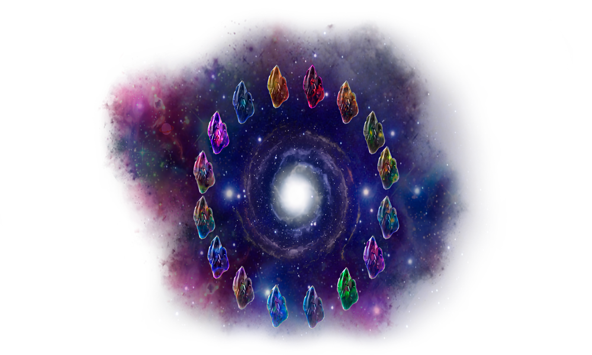

El Cosmere
Un cúmulo estelar enano donde conviven múltiples sistemas planetarios, dioses fragmentados y magia.

La Fragmentación
Hace milenios, el poder de la creación, Adonalsium, fue dividido en 16 Esquirlas divinas.
Un cúmulo estelar enano donde conviven múltiples sistemas planetarios, dioses fragmentados y magia.

Hace milenios, el poder de la creación, Adonalsium, fue dividido en 16 Esquirlas divinas.
Todo en el Cosmere existe de forma simultánea en tres Reinos de existencia distintos. La Investidura, que es la energía mágica primordial, fluye a través de ellos:
Las Esquirlas son las 16 partes en las que se dividió Adonalsium. Entidades como Ruina, Conservación o Honor son Esquirlas que se han asentado en distintos planetas, dando forma a sus sistemas de magia.
Un planeta envuelto en brumas y cenizas (en su época clásica). Su magia se basa en las Artes Metálicas.
Un mundo azotado por las Altas Tormentas, donde los humanos forman vínculos con espíritus llamados spren.
Un planeta donde la magia está fuertemente ligada a la geografía y a los patrones geométricos (como el AonDor).